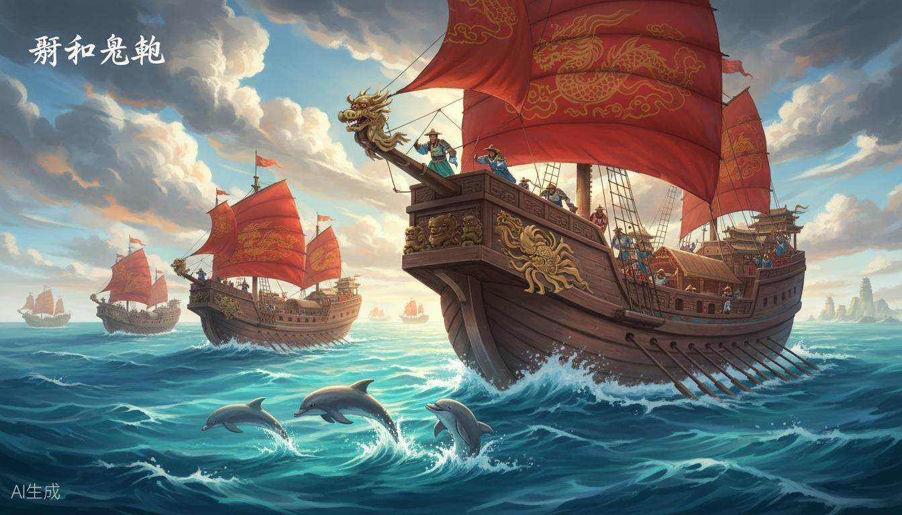
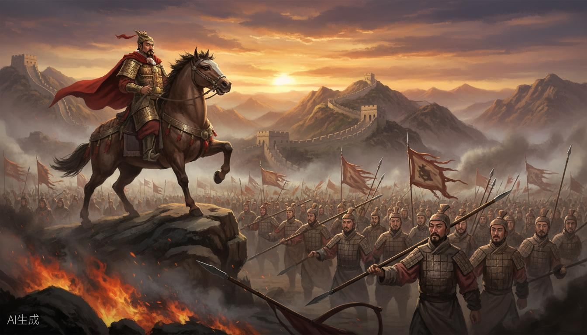
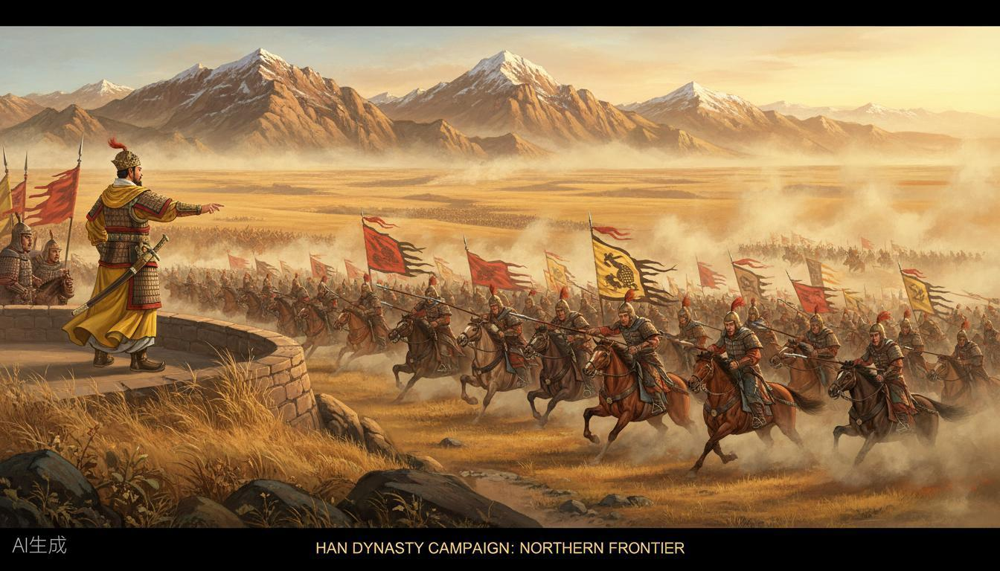
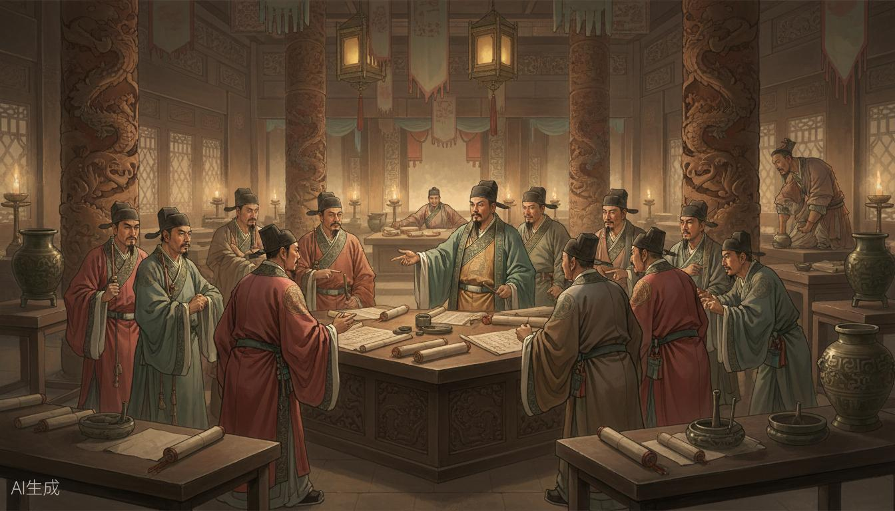
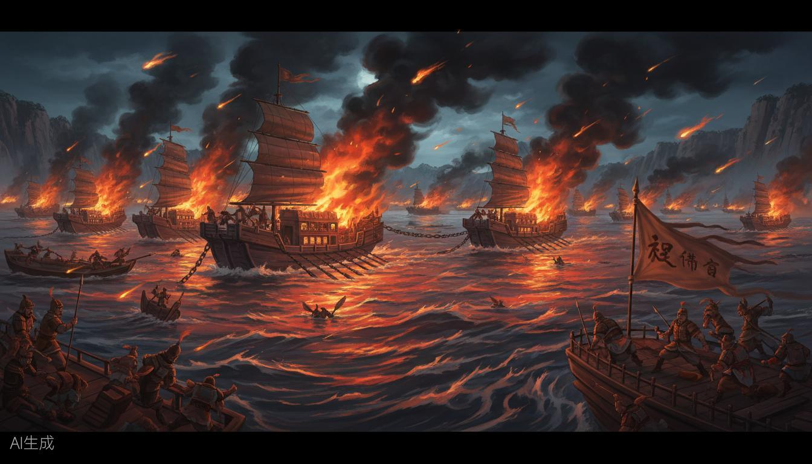
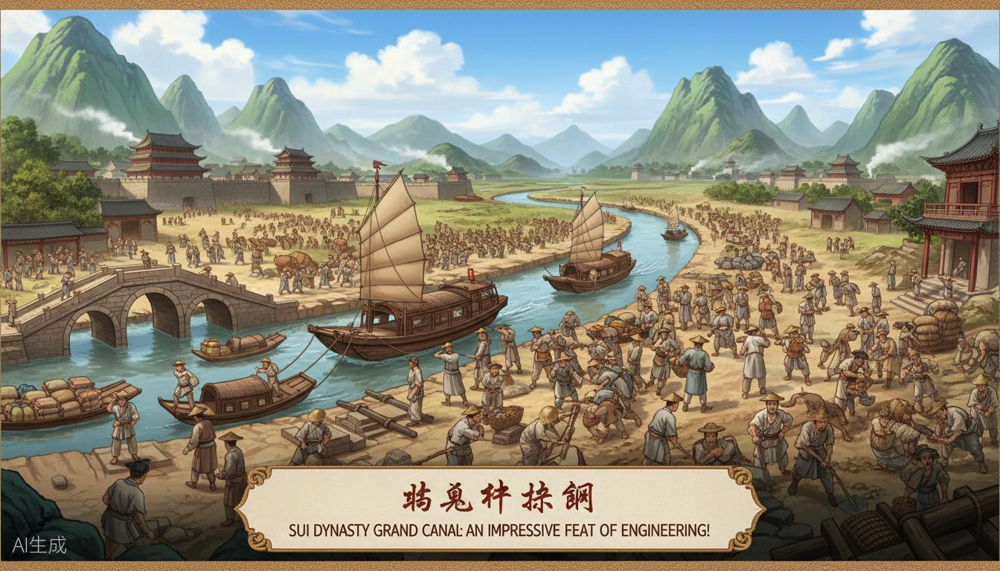
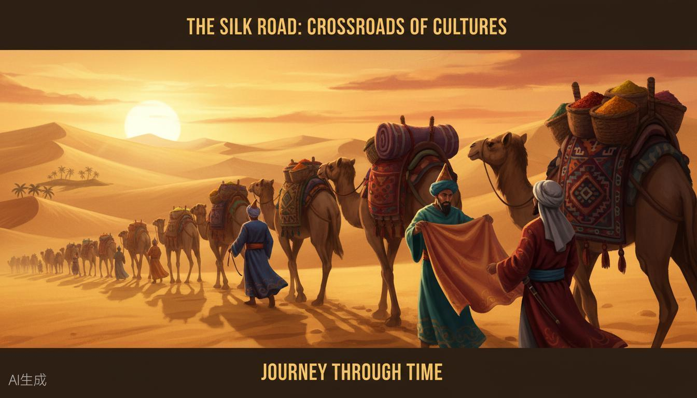
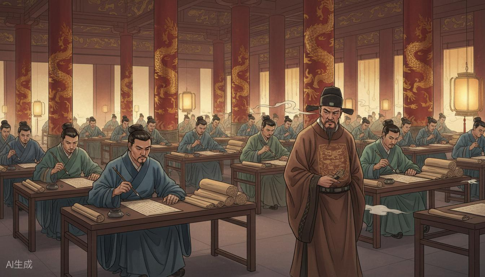

边玩边学，从童生到状元，通关中国史！

率领宝船舰队，七下西洋，选航线、避风暴、做贸易，重现航海壮举。
航海冒险
远交近攻，横扫六合。用策略征服六国，建立第一个大一统王朝。
策略征服
卫青、霍去病出击漠北，调兵遣将，决胜千里，封狼居胥。
战役指挥
废井田、奖军功、行县制。在秦国推行变法，应对阻力，富国强兵。
改革决策
孙刘联军决战曹操，火攻连环船，以少胜多，三分天下。
战术推演
规划路线、调配民力、解决难题，开凿贯通南北的千年运河。
工程管理
从长安到罗马，选择货物、应对风险、文化交流，重走丝路。
商贸冒险
乡试→会试→殿试，一路答题晋升，从童生到状元，考的全是考点！
答题晋升